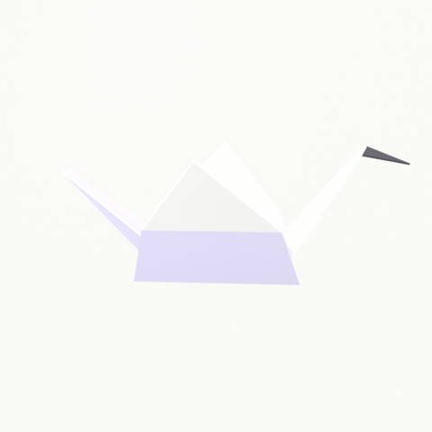

prompt2md launch filmv1
Everything else cuts. This folds. Ink to paper in about 31 seconds: the mess, the fold, three proofs, the unfold, the command.
1080×1920 · ~31 s · 9 beats · VO af_heart · captions on
Act I · the mess, the fold
◣your prompt
tokens150
ok so what i need is basically a python script that takes a folder of csv files
and merges them but ONLY the ones that have a "date" column, and also it should skip empty files. oh and the output should be a single parquet file. also please use pandas. actually it also needs to handle dates in different formats, some are MM/DD/YYYY and some are ISO. like i said merge them all into one parquet…
You write prompts like this.
A Markdown Magic
## Goal
what i need is a python script that takes a folder of csv files and merges them but ONLY the ones that have a "date" column, and also it should skip empty files
## Requirements
- the output should be a single parquet file
- please use pandas
## Constraints
- python 3.11
## Notes
- merge them all into one parquet
prompt2md folds it into clean Markdown.
◣live on prompt2md.vercel.app
Paste the mess. Hit Fold it.
Act II · the proof
◣the ledger
## Goal
what i need is a python script…
150
→
127
tokens
85% of original
no API key
Structured Markdown, an honest token count, and no API key.
◣long context
1,449→475
tokens 33% of input
# Incident 4417, full timeline
Update 5: engineers investigated subsystem 5 and recorded observations. […]<!-- p2md:src=c6199e0698ecc214#2062-2466 -->
Update 6: engineers investigated subsystem 6 and recorded observations. […]<!-- p2md:src=c6199e0698ecc214#2468-2872 -->
Update 7: engineers investigated subsystem 7 and recorded observations. […]<!-- p2md:src=c6199e0698ecc214#2874-3278 -->
Update 8: engineers investigated subsystem 8 and recorded observations. Extended narrative describing dashboards, hypotheses, and dead ends…
Too long? Fold fourteen hundred tokens to under five hundred.
Other tools cut and hope. This folds.
Act III · the guarantee, the reach, the command
◣unfold
Unfold any summary.
command line✓ byte-exact
$ prompt2md retrieve "p2md:src=c6199e0698ecc214#2874-3278"
Update 7: engineers investigated subsystem 7 and recorded observations. Extended narrative describing dashboards, hypotheses, and dead ends in detail. Extended narrative describing dashboards, hypotheses, and dead ends in detail. Extended narrative describing dashboards, hypotheses, and dead ends in detail. Extended narrative describing dashboards, hypotheses, and dead ends in detail. Key finding f-7.
Unfold any summary. The exact original comes back.
◣one command wires every tool
Claude Code
Cursor
Windsurf
Gemini CLI
Codex CLI
Claude Desktop
any MCP client
It plugs into Claude Code, Cursor, and any MCP client.

prompt2md
A Markdown Magic
$npx prompt2md-skill
prompt2md.vercel.app
Open source, Apache-2.0
Open source. Try it at prompt2md.vercel.app.
Map and tokens
Seam map: one direction, leftward
01 → 02Hard cut onto the same ink; the fold itself is the transition into paper.
02 → 03Crossfade with a leftward drift; the phone arrives from the right.
03 → 04Cut on the ledger; its numbers become the hero.
04 → 05Zoom-through into the long document.
05 → 06Push-slide left into the split.
06 → 07Cut to the terminal.
07 → 08Crossfade out of the held frame.
08 → 09Zoom-through into the close; the crane is still moving at the last frame.
Tokens and bans
paper #FAF9F6
ink #17151A
deep ink #0F0E11
violet #5B3DF5
green (measured)
tile #F4F2ED
EB Garamond: display, numbers
Inter: wordmark, UI, chips
JetBrains Mono: code, kickers, units
- No glow, flares or sparkles; no fake product UI.
- No invented numbers; units always named.
- No competitor names; no em dashes on screen.
- No slideshow, no screensaver, no static end card.